Seperti Apa Status Gizi Masyarakat di Pulau Jawa?
Analisis berbasis data nasional untuk melihat status gizi masyarakat Indonesia di pulau jawa berdasarkan provinsi.
Ringkasan Gizi Pulau Jawa
Rata-rata Kalori (kkal/hari)
Rata-rata Protein (gram/hari)
Status Gizi Normal
Grafik Bar Kalori & Protein per Provinsi (2023–2025)
Asupan Kalori (kkal/hari)
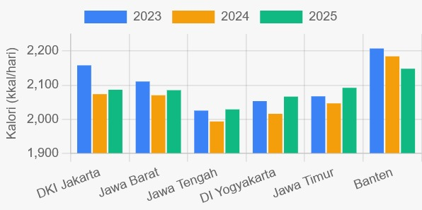
Sumber: BPS 2023-2025
Asupan Protein (gram/hari)
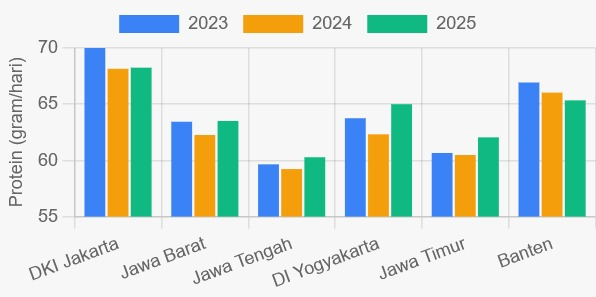
Sumber: BPS 2023-2025
Analisis Per Provinsi
Klik pada setiap provinsi untuk melihat linechart konsumsi (2023-2025) dan proporsi IMT.
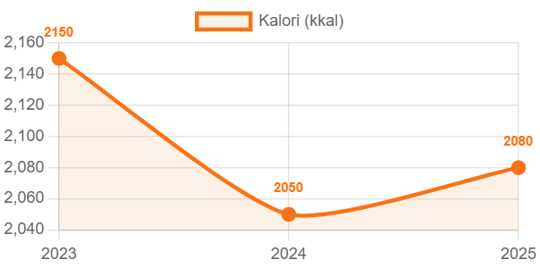
Konsumsi Kalori DKI Jakarta 2023-2025
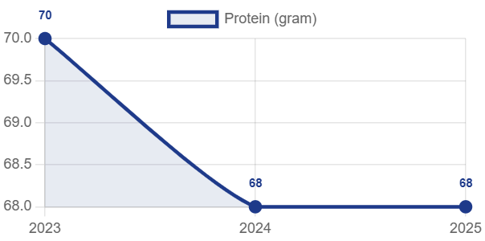
Konsumsi Protein DKI Jakarta 2023-2025
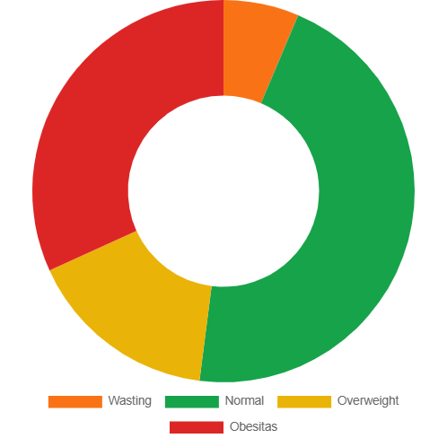
Proporsi IMT DKI Jakarta
Sumber: Survei Kesehatan Indonesia (SKI) 2023, Kemenkes.
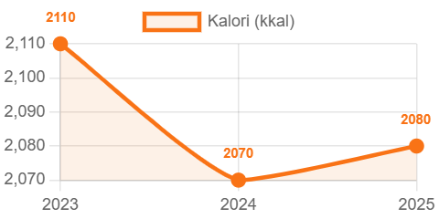
Konsumsi Kalori Jawa Barat 2023-2025
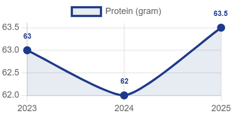
Konsumsi Protein Jawa Barat 2023-2025
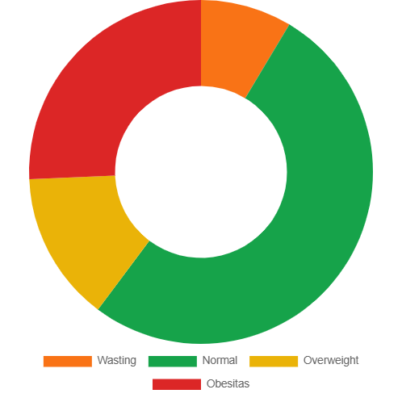
Proporsi IMT Jawa Barat
Sumber: Survei Kesehatan Indonesia (SKI) 2023, Kemenkes.
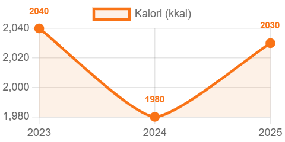
Konsumsi Kalori Jawa Tengah 2023-2025
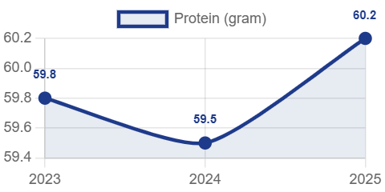
Konsumsi Protein Jawa Tengah 2023-2025
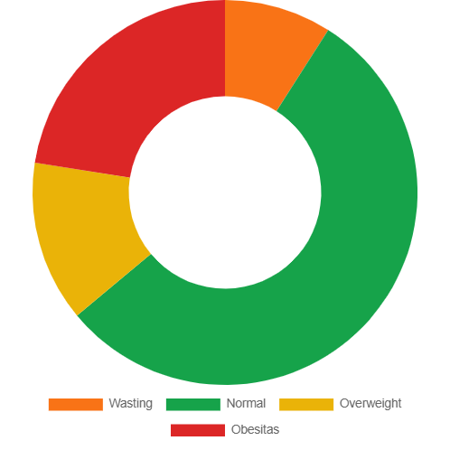
Proporsi IMT Jawa Tengah
Sumber: Survei Kesehatan Indonesia (SKI) 2023, Kemenkes.
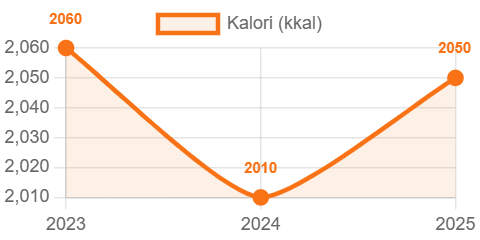
Konsumsi Kalori DI Yogyakarta 2023-2025
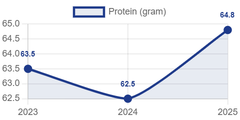
Konsumsi Protein DI Yogyakarta 2023-2025
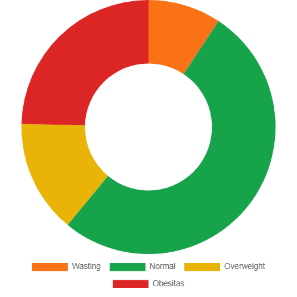
Proporsi IMT DI Yogyakarta
Sumber: Survei Kesehatan Indonesia (SKI) 2023, Kemenkes.
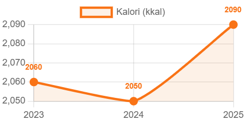
Konsumsi Kalori Jawa Timur 2023-2025
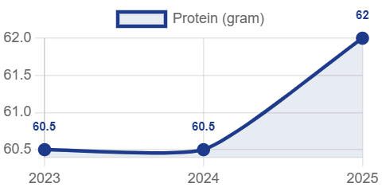
Konsumsi Protein Jawa Timur 2023-2025
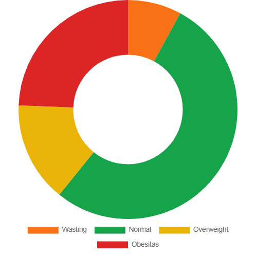
Proporsi IMT Jawa Timur
Sumber: Survei Kesehatan Indonesia (SKI) 2023, Kemenkes.
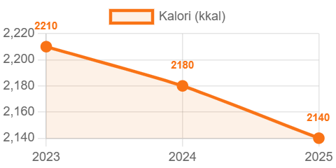
Konsumsi Kalori Banten 2023-2025
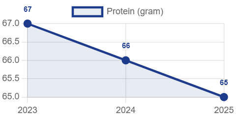
Konsumsi Protein Banten 2023-2025
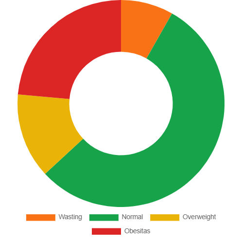
Proporsi IMT Banten
Sumber: Survei Kesehatan Indonesia (SKI) 2023, Kemenkes.
Peringkat Keseimbangan Gizi
| Peringkat | Provinsi | Skor Gizi | Kalori (2025) | Protein (2025) | % Gizi Normal | Saran |
|---|---|---|---|---|---|---|
| 1 | Jawa Tengah | 40.95 | 2030 | 60.2 | 54.9% | Status gizi cukup baik |
| 2 | Banten | 40.64 | 2140 | 65.0 | 54.9% | Status gizi cukup baik |
| 3 | Jawa Timur | 38.33 | 2090 | 62.0 | 52.9% | Status gizi cukup baik |
| 4 | DI Yogyakarta | 36.61 | 2050 | 64.8 | 51.7% | Status gizi cukup baik |
| 5 | Jawa Barat | 36.27 | 2080 | 63.5 | 51.7% | Status gizi cukup baik |
| 6 | DKI Jakarta | 27.78 | 2080 | 68.0 | 45.6% | Perbaiki kualitas protein |
Catatan
Skor = % Normal - (Wasting×0.3 + Obesitas×0.5). Data IMT dari SKI 2023 Kemenkes. Kalori & protein 2025 bersumber dari BPS.